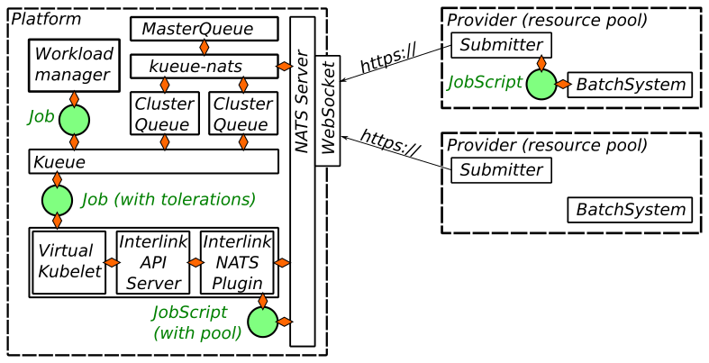

Architecture
As you may probably guess, the InterLink NATS Plugin is a plugin for InterLink, a Virtual Kubelet provider designed to execute Kubernetes pods in batch-job providers.
The InterLink NATS Plugin is built on two core ideas:
- a NATS overlay, accessed via TLS-terminated WebSockets, enable a bidirectional communication between the login- or edge-nodes of the resource providers without the need for network ingress rules.
- the job is converted into a bash script with the same Python code for all execution backends; the job script is sent by the plugin via NATS and submitted by a thin script to one of the queues; this approach reduces the duplication of the logics translating a Kubernetes pod in a bash script (which comes with a price in terms of supported features).
To manage the submission of payloads to multiple sites, possibly with different prices, features and limitations,
the InterLink NATS plugin relies on Kueue. A simple operator, named kueue-nats, takes care of mapping the resource
providers into Kueue ResourceFlavors and
ClusterQueues following the directives defined in a
custom resource named MasterQueue and the available resource as published via NATS from the submitters.
For details on the definition of a MasterQueue and on the kueue-nats controller, check the dedicated
documentation.
A schematic representation of the architecture is presented below.

The lifecycle of a job
To ease understanding the steps entering the submission and the execution of a Job, let's consider an example job and let's discuss the steps of its admission and submission.
- Job creation. A
batch/V1Jobresource is created by some Workload manager or bykubectl. It should include the Kueue-specific annotations defining the targetLocalQueueand, if intended for offloading, it must feature the standard InterLink toleration for the taintvirtual-node.interlink/no-schedule=true:NoSchedule. - Job admission. When the
ClusterQueuethe job has been submitted to has sufficient resources it admits the workload, assigning the highest-priority, compatibleResourceFlavor. Kueue defines the resource pool to which the payload is destined with the tolerationpool.vk.io. It will be responsibility of the plugin to submit the payload with the correct NATS subject to make the submitters of the right pool to receive and process it. Note that aClusterQueuecan include both local and interlink-related flavors, so a job tolerating offloading can be executed locally if the remote providers are either not available or completely committed or their correspondingResourceFlavorsare defined in the ClusterQueue logic at lower priority. Clearly, jobs not tolerating offloading will be mapped on localResourceFlavorsonly. - Job transmission. Once the Job is assigned to a VirtualKubelet, it is propagated to the InterLink API server and then to the InterLink NATS Plugin. In Helm chart made available in this repository, the three components are run in three containers of the same pod and communicate through a loopback network interface. Other architectures splitting the containers in different Pods, or even cluster, with OAuth2-proxy for authentication have been tested successfully, but they are too complex for being centrally maintained.
- Job translation. Once the job reaches the plugin, it gets translated into a bash script. Note that the target
pool is known at conversion time, and the generation of the script can be tweaked via a
BuildConfigthat the submitter publish periodically via NATS. This enables defining custom caches or singularity flags. - Job request. The Job is sent to the submitter through a NATS request, using a subject including the pod name.
- Job submission. Finally, the job received by the backend-specific submitter which submits it to the actual backend.
Build Configuration and Allocatable Resources
To inform the InterLink API Plugin of the requested configuration to generate the bash script running the job and
to inform the kueue-nats controller of the resources available in the node, NATS is used.
When launched, and then at periodic intervals, the submitters publish the BuildConfig object and the locally
available resources.
The BuildConfig for each pod is optionally cached in a redis database to avoid disruption of the service in case
of restart of the plugin api-server.